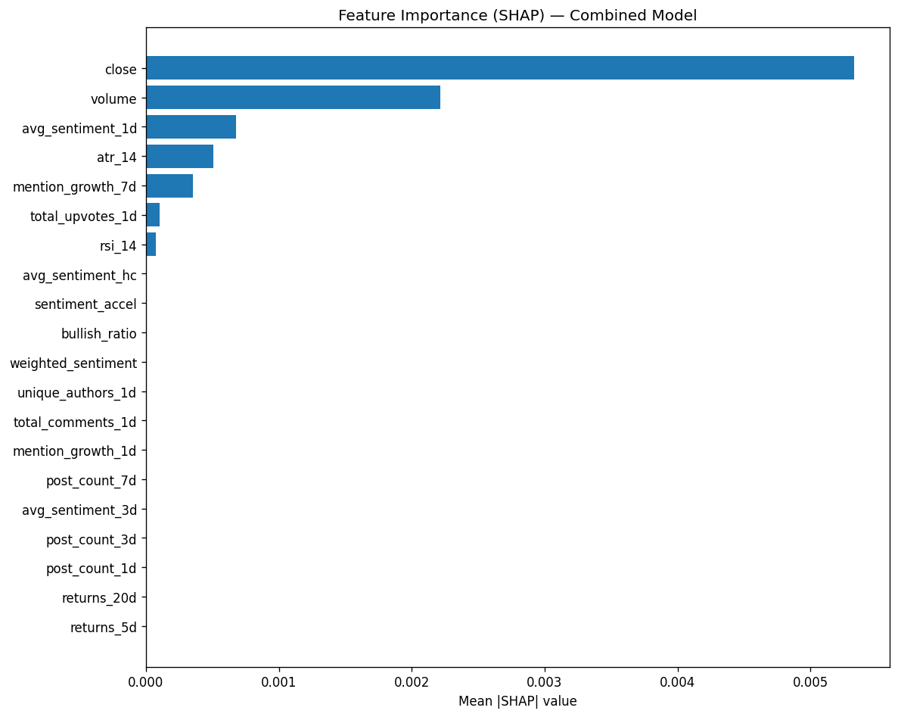

| Feature | Group | Mean |SHAP| |
|---|---|---|
| close | market | 0.0053 |
| volume | market | 0.0022 |
| avg_sentiment_1d | 0.0007 | |
| atr_14 | market | 0.0005 |
| mention_growth_7d | 0.0004 | |
| total_upvotes_1d | 0.0001 | |
| rsi_14 | market | 0.0001 |
| avg_sentiment_hc | 0.0000 | |
| sentiment_accel | 0.0000 | |
| bullish_ratio | 0.0000 | |
| weighted_sentiment | 0.0000 | |
| unique_authors_1d | 0.0000 | |
| total_comments_1d | 0.0000 | |
| mention_growth_1d | 0.0000 | |
| post_count_7d | 0.0000 | |
| avg_sentiment_3d | 0.0000 | |
| post_count_3d | 0.0000 | |
| post_count_1d | 0.0000 | |
| returns_20d | market | 0.0000 |
| returns_5d | market | 0.0000 |
| Subset | N Features | Test IC |
|---|---|---|
| market_only | 10 | 0.0002 |
| reddit_volume | 8 | -0.0847 |
| reddit_sentiment | 7 | -0.0839 |
| reddit_velocity | 5 | -0.1163 |
| combined_core | 15 | -0.0515 |
| combined_all | 25 | -0.0196 |

Generated by pipeline/06_feature_importance.py